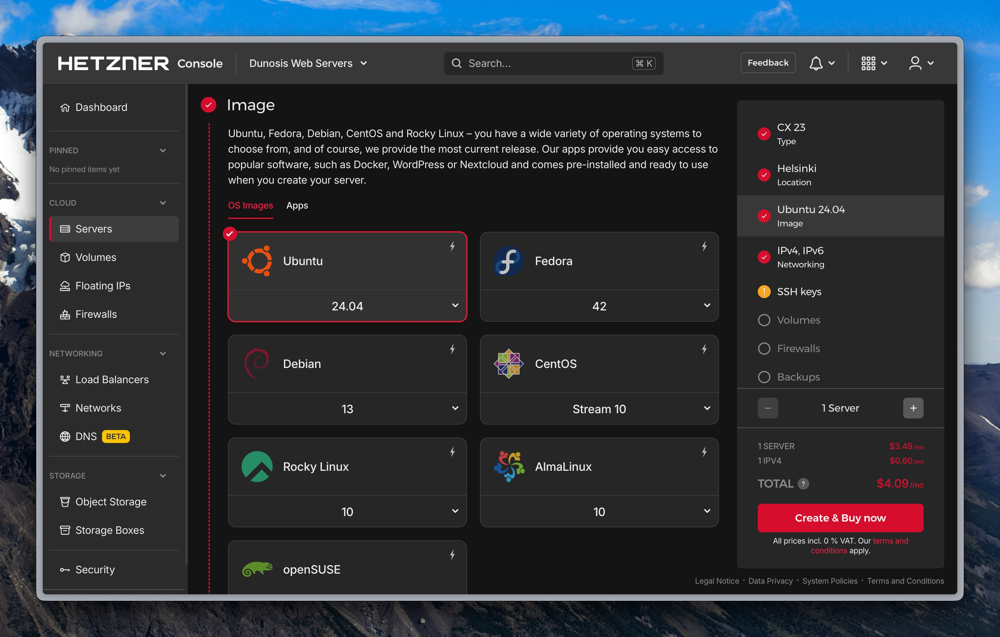

Deployment Process: Hetzner + Coolify
This guide documents the complete process for provisioning a Virtual Private Server (VPS) on Hetzner and configuring it with Coolify for automated application deployment.
Part 1: Provisioning the Server (Hetzner)
1. Create the Server
Everything starts with a VPS on Hetzner Cloud. In your control panel, select your project and click Add server.

2. Configure the Server
Next, you will need to configure the server specifications based on your needs.

Location
The location is not critical if you choose the cheapest option. If you need a specific location (e.g., to reduce latency for users in the US), select Ashburn, VA.

Image
Select Ubuntu 24.04.
Note
Coolify v4 officially recommends Ubuntu 22.04 LTS or Ubuntu 24.04 LTS (64-bit) for optimal performance and compatibility. You can change this later, but it's best to start with the recommended image.

Server Type
For most development projects or small applications, the cheapest option (like CAX11) is usually sufficient.
Tip: Resource Planning
While the cheapest option is a good starting point, consider your needs.
_ ARM (CAX): Best price-to-performance ratio, ideal for most web applications.
_ x86 (CPX): Necessary if you rely on Docker images that only have an amd64 build.

SSH Keys
This is a crucial security step!
- Recommended: Select the SSH keys you will use to access the server. You must have the key pair (public and private) already generated on your local machine.
- Not Recommended: If you do not select any key, Hetzner will email you the
rootpassword.
Security First!
Never use the root password for Coolify. It's a bad security practice. Always use SSH keys. If you receive the password via email, use it only for the first login to set up SSH key access, then disable password login.

Additional Options
For a standard Coolify setup, you can leave the defaults.
- Networking: Leave as default.
- Volumes: Useful if you need more disk space without increasing CPU/RAM.
- Firewalls: You can configure this later. Coolify will manage the necessary ports via
ufwon the server itself. - Backups: Highly recommended for production! It's a low additional cost for daily copies.
- Labels: Useful for organizing many servers.
- Cloud Config: For first-boot scripts (advanced users).
Server Name
Assign a descriptive name to the server.
Naming Convention
A good convention helps with organization:
_ Use the project or client name in lowercase.
_ Use dashes (-) instead of spaces.
_ Avoid numbers or special symbols.
_ Add a descriptor if necessary (e.g., prod, staging). * Example: duosis-website-prod * Example: saras-cocina-migration
Finally, click Create & Buy now. Your server will take a few seconds to provision.

Part 2: Connect Server to Coolify
3. Add Server to Coolify
Once the server is active in Hetzner (and you have its IP address), go to your Coolify instance:
- Navigate to Servers and click Add a new Server.
- Fill in the fields:
- Name: Use the same name as in Hetzner for consistency.
- Description: Add a simple description (e.g., "Duosis production server").
- IP Address: The public IP address of your Hetzner server.
- User:
root(if you will use therootSSH key you selected). - Port:
22(default). - Private Key: Select the private SSH key that corresponds to the public key you added to the server in Hetzner.

4. Validate and Install Docker
Click Save & Connect. Coolify will attempt to connect to the server using the provided SSH key.
- If the connection is successful, Coolify will check if Docker is installed.
- If it's the first time, Coolify will automatically install and configure Docker Engine and Docker Compose on the server.

And that's it! Your server is provisioned and connected, ready to deploy applications.
Part 3: Deploy an Application
5. Create a Project in Coolify
Projects are used to group related resources (applications, databases, etc.).
- In Coolify, go to Projects.
- Click Add a new Project.
- Assign a name (e.g., the client's or website's name) and a description.

6. Create Environments
By default, a project is created with an environment named production. It's good practice to create a development environment (development or dev).
- Inside your project, click Add a new Environment.
- Name it
development.
Environment Parity
You can create more environments as needed (e.g., staging, testing). This allows you to test changes in one environment (like development) before promoting them to production.
7. Create Resources (Application)
We will create a resource (your application) within the development environment.
- Select the
developmentenvironment. - Click Add a new Resource.
- You have several options. The most common is to deploy from a GitHub, GitLab, or Bitbucket repository.
- Select Based on a Git repository.


Next, configure the repository source:
- Server: Select the Hetzner server you configured earlier.
- Git App: Choose the GitHub App you have connected to your Coolify instance.
Prerequisite: GitHub App
This step assumes you have already configured a "Source" in Coolify by linking your GitHub account via the Coolify GitHub App.

- Repository: Select your project's repository.
- Branch: For the
developmentenvironment, select your development branch (e.g.,devordevelop). Forproduction, you would usemainormaster.

- Build Pack: Change this to Docker Compose. This tells Coolify to look for a
docker-compose.ymlfile in your repository. - Docker Compose File: Specify the path to your compose file (e.g.,
./docker-compose.yml).
File Extension
Make sure the file extension is correct. Coolify differentiates between .yml and .yaml.

8. Configure the Application
Once the resource is created, click on it to access its configuration.
- General:
- Name: Name your application. Follow a convention:
<app-name>-devfor development and<app-name>-prodfor production. - Description: Add a description.
- Domains:
- If you don't have a domain, Coolify can generate a preview URL (e.g.,
app-name.your-coolify-server.com). - If you have a domain, add it here. For development, you can use a subdomain like
dev.my-domain.com. For production, you would usemy-domain.comandwww.my-domain.com. - (The step of configuring DNS to point to your server's IP is documented separately).
- Build:
- Here you can add custom
buildorstartcommands if yourdocker-compose.ymlrequires them or if you are not using Compose. - Environment Variables:
- Add any environment variables (secrets, API keys, etc.) your application needs.
- Merge pull request variables? Enable this if you want environment variables to be injected into Pull Request previews as well.
Developer View
Use the Developer View to add or edit environment variables in bulk (in .env format), which is much faster.
9. Deploy and Test!
Once all the configuration is in place:
- Click the Deploy button.
- Coolify will fetch the code from your branch, build the Docker image (if necessary), and start the services defined in your
docker-compose.yml. - You can watch the real-time progress in the Deployment Logs tab.
If everything is configured correctly (especially your Dockerfile and docker-compose.yml), the deployment should succeed. If it fails, the logs will indicate the error, which is usually a configuration issue or a missing environment variable.
Author: Wesley Ordonez Last updated: April 14, 2025
Documentacin en Espaol
Proceso de Despliegue: Hetzner + Coolify
Esta gua documenta el proceso completo para provisionar un servidor virtual (VPS) en Hetzner y configurarlo con Coolify para el despliegue automatizado de aplicaciones.
Parte 1: Provisionar el Servidor (Hetzner)
1. Creacin del Servidor
Todo comienza con un VPS en Hetzner Cloud. En tu panel de control, selecciona tu proyecto y haz clic en Add server (Aadir servidor).
2. Configuracin del Servidor
A continuacin, debers configurar las especificaciones del servidor segn tus necesidades.
Ubicacin (Location)
La ubicacin no es crtica si eliges la opcin ms econmica. Si necesitas una ubicacin especfica (p. ej., para reducir latencia con usuarios en EE.UU.), selecciona Ashburn, VA.
Imagen (Image)
Selecciona Ubuntu 24.04.
Nota
Coolify v4 recomienda oficialmente Ubuntu 22.04 LTS o Ubuntu 24.04 LTS (64-bit) para un rendimiento y compatibilidad ptimos. Puedes cambiar esto ms tarde, pero es mejor empezar con la imagen recomendada.
Tipo de Servidor (Type)
Para la mayora de los proyectos de desarrollo o aplicaciones pequeas, la opcin ms econmica (como CAX11) suele ser suficiente.
Tip: Planificacin de Recursos
Aunque la opcin ms barata es un buen punto de partida, considera tus necesidades.
_ ARM (CAX): Mejor relacin precio/rendimiento, ideal para la mayora de las aplicaciones web.
_ x86 (CPX): Necesario si dependes de imgenes Docker que solo tienen compilacin amd64.
Claves SSH (SSH Keys)
Este es un paso de seguridad crucial!
- Recomendado: Selecciona las claves SSH que usars para acceder al servidor. Debes tener el par de claves (pblica y privada) generado previamente en tu mquina local.
- No recomendado: Si no seleccionas ninguna clave, Hetzner te enviar un correo electrnico con la contrasea de
root.
Seguridad Primero!
Nunca uses la contrasea de root para Coolify. Es una mala prctica de seguridad. Siempre usa claves SSH. Si recibes la contrasea por correo, sala solo la primera vez para iniciar sesin y configurar el acceso con tu clave SSH, luego deshabilita el inicio de sesin con contrasea.
Opciones Adicionales
Para una configuracin estndar de Coolify, puedes dejar los valores predeterminados.
- Networking: Dejar por defecto.
- Volumes: til si necesitas ms espacio en disco sin aumentar la CPU/RAM.
- Firewalls: Puedes configurar esto ms tarde. Coolify gestionar los puertos necesarios a travs de
ufwen el propio servidor. - Backups: Altamente recomendado para produccin! Es un costo adicional bajo por copias diarias.
- Labels: til para organizar muchos servidores.
- Cloud Config: Para scripts de primer arranque (usuarios avanzados).
Nombre del Servidor
Asigna un nombre descriptivo al servidor.
Convencin de Nombres
Una buena convencin ayuda a la organizacin:
_ Usa el nombre del proyecto o cliente en minsculas.
_ Usa guiones (-) en lugar de espacios.
_ Evita nmeros o smbolos especiales.
_ Aade un descriptor si es necesario (p. ej., prod, staging). * Ejemplo: duosis-website-prod * Ejemplo: saras-cocina-migration
Finalmente, haz clic en Create & Buy now. Tu servidor tardar unos segundos en provisionarse.
Parte 2: Conectar Servidor a Coolify
3. Aadir Servidor a Coolify
Una vez que el servidor est activo en Hetzner (y tengas su direccin IP), ve a tu instancia de Coolify:
- Navega a Servers y haz clic en Add a new Server.
- Completa los campos:
- Name: Usa el mismo nombre que en Hetzner para mantener la coherencia.
- Description: Aade una descripcin simple (p. ej., "Servidor de produccin Duosis").
- IP Address: La direccin IP pblica de tu servidor Hetzner.
- User:
root(si usars la clave SSH derootque seleccionaste). - Port:
22(predeterminado). - Private Key: Selecciona la clave SSH privada que corresponde a la clave pblica que aadiste al servidor en Hetzner.
4. Validar e Instalar Docker
Haz clic en Save & Connect. Coolify intentar conectarse al servidor usando la clave SSH proporcionada.
- Si la conexin es exitosa, Coolify comprobar si Docker est instalado.
- Si es la primera vez, Coolify instalar y configurar automticamente Docker Engine y Docker Compose en el servidor.
Y eso es todo! Tu servidor est provisionado y conectado, listo para desplegar aplicaciones.
Parte 3: Desplegar una Aplicacin
5. Crear un Proyecto en Coolify
Los proyectos se utilizan para agrupar recursos relacionados (aplicaciones, bases de datos, etc.).
- En Coolify, ve a Projects.
- Haz clic en Add a new Project.
- Asigna un nombre (p. ej., el nombre del cliente o del sitio web) y una descripcin.
6. Crear Entornos
Por defecto, un proyecto se crea con un entorno llamado production. Es una buena prctica crear un entorno de desarrollo (development o dev).
- Dentro de tu proyecto, haz clic en Add a new Environment.
- Nmbralo
development.
Paridad de Entornos
Puedes crear ms entornos segn sea necesario (p. ej., staging, testing). Esto te permite probar cambios en un entorno (como development) antes de promocionarlos a production.
7. Crear Recursos (Aplicacin)
Crearemos un recurso (tu aplicacin) dentro del entorno development.
- Selecciona el entorno
development. - Haz clic en Add a new Resource.
- Tienes varias opciones. La ms comn es desplegar desde un repositorio de GitHub, GitLab o Bitbucket.
- Selecciona Based on a Git repository.
A continuacin, configura la fuente del repositorio:
- Server: Selecciona el servidor de Hetzner que configuraste anteriormente.
- Git App: Elige la GitHub App que has conectado a tu instancia de Coolify.
Prerrequisito: GitHub App
Este paso asume que ya has configurado una "Source" (Fuente) en Coolify, vinculando tu cuenta de GitHub a travs de la GitHub App de Coolify.
- Repository: Selecciona el repositorio de tu proyecto.
- Branch: Para el entorno
development, selecciona tu rama de desarrollo (p. ej.,devodevelop). Paraproduction, usarasmainomaster.
- Build Pack: Cambia esto a Docker Compose. Esto le dice a Coolify que busque un archivo
docker-compose.ymlen tu repositorio. - Docker Compose File: Especifica la ruta a tu archivo de composicin. (p. ej.,
./docker-compose.yml).
Extensin de archivo
Asegrate de que la extensin del archivo sea la correcta. Coolify diferencia entre .yml y .yaml.
8. Configurar la Aplicacin
Una vez creado el recurso, haz clic en l para acceder a su configuracin.
- General:
- Name: Nombra tu aplicacin. Sigue una convencin:
<app-name>-devpara desarrollo y<app-name>-prodpara produccin. - Description: Aade una descripcin.
- Domains:
- Si no tienes un dominio, Coolify puede generar una URL de vista previa (p. ej.,
app-name.tu-coolify-server.com). - Si tienes un dominio, adelo aqu. Para desarrollo, puedes usar un subdominio como
dev.mi-dominio.com. Para produccin, usarasmi-dominio.comywww.mi-dominio.com. - (El paso de configurar DNS para que apunte a la IP de tu servidor se documenta por separado).
- Build:
- Aqu puedes aadir comandos de
buildostartpersonalizados si tudocker-compose.ymllos requiere o si no usas Compose. - Environment Variables:
- Aade cualquier variable de entorno (secrets, claves de API, etc.) que tu aplicacin necesite.
- Merge pull request variables? Activa esto si quieres que las variables de entorno se inyecten tambin en los previews de Pull Requests.
Vista de Desarrollador
Usa la Developer View (Vista de Desarrollador) para aadir o editar variables de entorno en bloque (formato .env), lo cual es mucho ms rpido.
9. Desplegar y Probar!
Una vez que toda la configuracin est en su lugar:
- Haz clic en el botn Deploy (Desplegar).
- Coolify obtendr el cdigo de tu rama, construir la imagen de Docker (si es necesario) y levantar los servicios definidos en tu
docker-compose.yml. - Puedes ver el progreso en tiempo real en la pestaa Deployment Logs.
Si todo est configurado correctamente (especialmente tu Dockerfile y docker-compose.yml), el despliegue debera completarse con xito. Si falla, los registros (logs) te indicarn el error, que suele ser un problema de configuracin o una variable de entorno faltante.
Autor: Wesley Ordonez ltima actualizacin: 23 de octubre de 2025